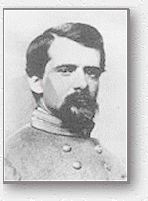

|
|
|
|
|
|
|
|

|
Major General John Pegram |
|
Major General John Pegram was born in Virginia, January 24, 1832. He
was appointed a cadet from Virginia in the United States military academy,
and was graduated in 1854, with promotion to brevet second lieutenant of
dragoons. He served on frontier duty, first at Fort Tejon, Cal., and
afterward at Fort Riley, Kan., where he was commissioned second
lieutenant of dragoons, and at Forts Lookout and Randall, Dak. His duties
in the west were relived for a time in 1857, by assignment as assistant
instructor of cavalry. Promoted to first lieutenant of the Second dragoons,
he became adjutant of that regiment, and resumed his frontier service until
1858, when he was given leave of absence for two years for a tour of
Europe. On his return he continued in the United States army until May 10,
1861, when he resigned. He was commissioned captain, corps of cavalry,
C.S.A., and was promoted rapidly to higher grades. As lieutenant-colonel
he participated in the operations of General Garnett's command about
Beverly, W.Va., in the summer of 1861, and when confronted by the
Federal forces in overwhelming numbers under McClellan and Rosecrans,
Pegram was intrusted by Garnett with the command of one of the two
bodies in which he divided his forces. A rear attack by Rosecrans
compelled him to withdraw after a gallant fight, from Rich mountain, and
two days later he was compelled to surrender with half his command. After
his return to the army he was assigned to the staff of General Bragg at
Tupelo, Miss., as chief of engineers, July, 1862, and later became chief of
staff of Gen. E. Kirby Smith, in command in east Tennessee. In that
capacity he participated in the Kentucky campaign and the battle of
Richmond, where his services were gratefully recognized in the report of the
general commanding. In November he was promoted to brigadier-general
and assigned to the command of a cavalry brigade-general and assigned to
the command of a cavalry brigade of Tennesseeans in Smith's army. With
his brigade he participated in the battle of Murfreesboro, and subsequently
was upon outpost duty and various active operations until the battle of
Chickamauga, where he commanded a division of Forrest's cavalry corps.
Subsequently he was transferred to the army of Northern Virginia and the
infantry service, being given command of a brigade in Early's division of the
Second corps, composed of the Thirteenth, Thirty-first, Forty-ninth, Fifty-
second and Fifty-eighth Virginia regiments. With this gallant body of
veterans he was in the campaign from the Rapidan to the James, and was
particularly distinguished during the second day of the fight in the
Wilderness, when his brigade repelled the persistent assaults of the
Federals, determined to turn the flank of Ewell's corps. In command of
Early's division he took part in the campaign against Sheridan in the
Shenandoah valley in the fall of 1864, and after the return of these forces
to the continued in command of the division, a part of Gordon's corps,
throughout the winter. On February 6, 1865, he moved from camp to
reconnoiter and was attacked by the enemy in heavy force on Hatcher's
run. His men were pressed back in spite of a brave resistance until
reinforced by the division of C. A. Evans, when the enemy was in turn
forced to retire. After meeting a second check the Confederates reformed
and charged again, driving the Federals, and in this moment of success,
General Pegram fell mortally wounded. His death occurred on the same
day.
Source: Evans, Clement, Confederate Military History, Volume III, Confederate Publishing Company, Atlanta, GA, 1899. |
|